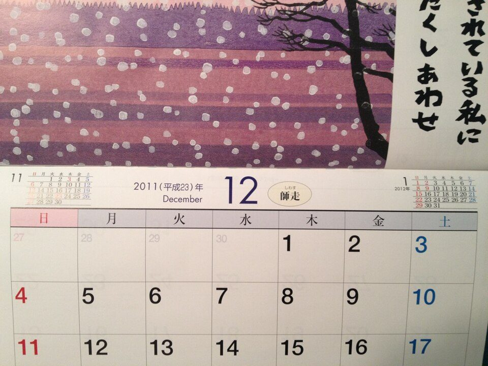
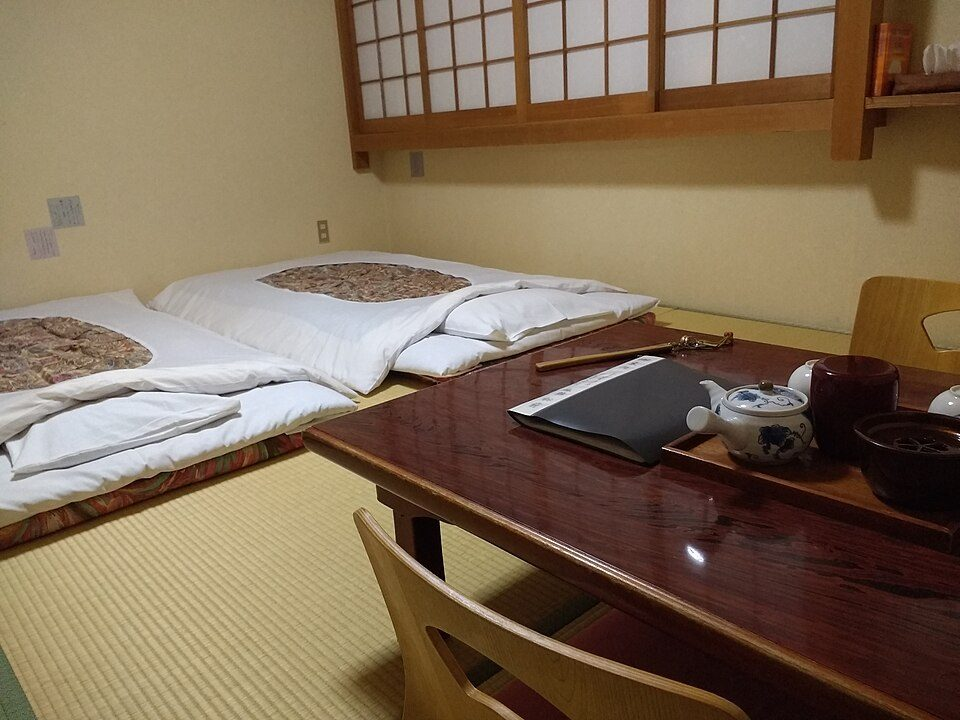

有給休暇の上手な使い方：半日・時間単位・計画年休と、2027年の連休のつなげ方
要点まとめ
年次有給休暇（有休）は、働く人の権利です。ただ、「いつ、どう取れば休みやすいか」は意外と知られていません。この記事では、半日や時間単位で取る方法、会社が日を決める計画的付与、祝日とのつなげ方を、労働基準法と厚生労働省の資料でまとめました。入社してすぐの付与の基本は、社会人1年目にやっておくことにも書いています。

数字で見る：有休はどれくらい取られているか
取得率は66.9%で、調査を始めてから最も高い
2024年は付与18.1日のうち、平均12.1日を取得
出典: 厚生労働省「就労条件総合調査」の各年の報道発表[8][9][10][11][12][13][14][1]。2025年12月に公表された調査では、2024年の1人平均の付与日数は18.1日、取得日数は12.1日、取得率は66.9%で、取得率は1984年以降で最も高くなりました[1]。国の過労死等防止対策大綱は、2028年までに取得率を70%以上にする目標を掲げています[2]。
業種で、取得率に25ポイントの差がある
電気・ガスなどは75.2%、宿泊・飲食サービスは50.7%
企業の規模別では、1,000人以上が69.0%、30〜99人が64.9%でした[15]。
何日もらえて、いつ消えるか
| 勤続 | 通常の人 | 週4日 | 週3日 | 週2日 | 週1日 |
|---|---|---|---|---|---|
| 6か月 | 10日 | 7日 | 5日 | 3日 | 1日 |
| 1年6か月 | 11日 | 8日 | 6日 | 4日 | 2日 |
| 2年6か月 | 12日 | 9日 | 6日 | 4日 | 2日 |
| 3年6か月 | 14日 | 10日 | 8日 | 5日 | 2日 |
| 4年6か月 | 16日 | 12日 | 9日 | 6日 | 3日 |
| 5年6か月 | 18日 | 13日 | 10日 | 6日 | 3日 |
| 6年6か月以上 | 20日 | 15日 | 11日 | 7日 | 3日 |
出典: 労働基準法と施行規則[4][16]。週4日以下の欄は、週の所定労働時間が30時間未満の人の日数です[16]。最初の付与には、6か月続けて勤め、全労働日の8割以上出勤することが条件です[4]。正社員・パート・シフト制などの区分は関係ありません[17]。
使わなかった分は翌年に繰り越せるが、2年で消える
有休を請求できる権利の時効は2年
有休の時効は2年で、前の年度に取らなかった分は翌年度に繰り越されます[3]。2020年4月の法改正で賃金の請求の時効は延びましたが、有休は2年のままです[18]。
取り方の道具箱：半日・時間単位・計画年休
| 取り方 | 必要なこと | 上限 | 年5日の義務に数えるか |
|---|---|---|---|
| 1日単位 | なし（基本の取り方） | なし | 数える[4] |
| 半日単位 | 本人が希望し、会社が同意する[3] | 法律の定めはない | 0.5日として数える[7] |
| 時間単位 | 会社と労働者の代表との協定（労使協定）[4] | 年5日まで[4] | 数えない[7] |
| 計画的付与 | 労使協定で、会社が取る日を決める[4] | 5日を超える部分だけ[4] | 数える[3] |
半日・時間単位は、通院や手続きに使いやすい
時間単位は、会社に労使協定がある場合だけ使える
半日単位は法律に定めがありませんが、本人が希望して会社が同意すれば取れます[3]。時間単位は、会社が労使協定を結んでいれば、年5日分まで時間で取れます[4]。どちらが使えるかは、会社の就業規則で確かめます（筆者の見解）。
計画的付与は、連休をつくるのに使われる
計画的付与の制度がある会社は40.8%
計画的付与は、労使協定で会社が有休を取る日を決める仕組みで、5日は本人が自由に使える分として残す必要があります[3]。厚生労働省は、夏季や年末年始に計画的付与を組み合わせて大型連休にする例を紹介しています[3]。制度がある会社は40.8%で、そのうち71.6%が5〜6日を割り当てていました[15]。
2027年は、何日足せば何連休になるか
内閣府が公表している2027年の祝日をもとに、土日・祝日が休みの人の場合で計算しました（筆者の計算）[5]。会社の年末年始休みやお盆休みは、会社ごとに違います。
| 時期 | 有休を取る日 | 連休 |
|---|---|---|
| 2026年 勤労感謝の日 | 11月20日（金） | 4連休（11/20〜11/23） |
| 2026〜27年 年末年始（会社が12/29〜1/3休みの場合） | 12月28日（月） | 9連休（12/26〜1/3） |
| 2027年 建国記念の日 | 2月12日（金） | 4連休（2/11〜2/14） |
| 2027年 ゴールデンウィーク | 4月30日（金） | 7連休（4/29〜5/5） |
| 2027年 ゴールデンウィーク | 4月30日・5月6日・5月7日 | 11連休（4/29〜5/9） |
| 2027年 シルバーウィーク | 9月21日（火）・22日（水） | 6連休（9/18〜9/23） |
| 2027年 シルバーウィーク | 9月21日・22日・24日 | 9連休（9/18〜9/26） |
| 2027年 文化の日 | 11月1日（月）・2日（火） | 5連休（10/30〜11/3） |
月曜が祝日の3連休（2027年は成人の日1月11日、海の日7月19日、スポーツの日10月11日）は、前の金曜に1日足すと4連休になります（筆者の計算）[5]。厚生労働省は、土日・祝日に有休を1日足して連休にすることを「プラスワン休暇」として紹介しています[3]。2028年の祝日は、2027年2月に公表される予定です[5]。
会社とのやりとりで知っておきたいルール
休む理由は言わなくてよい
会社は、有休の使い道で取得を制限できない
会社が日を変えられるのは、事業に支障がある場合だけ
時季変更権は「事業の正常な運営を妨げる場合」に限られる
請求された日に休ませると事業の正常な運営を妨げる場合に限って、会社は別の日に変えることができます（時季変更権）[4]。厚生労働省は、同じ時期に多くの人が休みを希望し、全員に与えにくい場合などを例に挙げています[3]。
年5日は、会社が取らせる義務がある
付与が10日以上の人は、年5日を必ず取らせる
有休が年10日以上付与される人には、会社が1年以内に5日、時季を指定して取らせなければなりません[4]。管理監督者も対象です[3]。会社が時季を指定するときは、本人の意見を聴き、尊重するよう努めることになっています[16]。違反すると、30万円以下の罰金の対象になります[4]。
有休を取ったことで、不利な扱いをしてはいけない
皆勤手当や賞与で、有休の日を欠勤扱いにするのは不利益な扱い
労働基準法は、有休を取った人に賃金を減らすなどの不利益な扱いをしないよう定めています[4]。厚生労働省は、精皆勤手当や賞与の計算で有休の日を欠勤扱いにすることを、不利益な扱いの例に挙げています[3]。
買い取りは原則できない。退職前は請求どおりに取れる
お金を払っても、有休を与えたことにはならない
有休の代わりにお金を払っても、有休を与えたことにはなりません[19]。例外として、法律より多く与えた分、時効で消える分、退職で消える分は、取得を妨げない範囲で買い取れるとされています[20]。ただし、会社に買い取る義務があるわけではありません（筆者の見解）。退職する人の場合、退職日より後に時季を変えることはできないので、会社は請求どおりに与えなければなりません[21]。
休みやすくする取り組みと相談先

10月は、年次有給休暇取得促進期間
厚生労働省は毎年10月に、計画的付与などの活用を呼びかける
厚生労働省は毎年10月を「年次有給休暇取得促進期間」として、集中的に広報しています[17]。2026年の発表では、計画的付与制度と時間単位の年休の活用を勧めています[17]。愛知県は「休み方改革」として、子どもが保護者と学校の外で学ぶ日を年3日まで取れる「ラーケーション」に取り組んでいます[22]。
困ったら、総合労働相談コーナーへ
予約なし・無料で、面談か電話で相談できる
有休を取らせてもらえないなど、労働の問題は、各地の総合労働相談コーナーで相談できます[23]。予約は不要で無料、働く人も会社も相談できます[23]。
今回確認できなかった点
- 有休の取得をためらう理由についての公的な調査の数字（資料を取得できなかった）
- 2025年の取得率（令和8年調査は未公表）
- 半日単位や買い取りについての通達の原文
- 2028年の祝日（2027年2月に公表予定）
出典（23件）
閲覧日はいずれも2026年11月9日
- 令和7年就労条件総合調査の結果（報道発表。2024年の実績）（厚生労働省）
- 過労死等の防止のための対策に関する大綱（2024年8月2日閣議決定）（厚生労働省）
- 年5日の年次有給休暇の確実な取得 わかりやすい解説（2023年2月）（厚生労働省・都道府県労働局・労働基準監督署）
- 労働基準法（昭和22年法律第49号）（デジタル庁 e-Gov法令検索）
- 「国民の祝日」について（内閣府）
- 年次有給休暇はどのような場合に、何日与えなければならないのでしょうか？（厚生労働省（スタートアップ労働条件））
- 改正労働基準法に関するQ&A（2019年4月）（厚生労働省労働基準局）
- 平成30年就労条件総合調査の結果（報道発表。2017年の実績）（厚生労働省）
- 平成31年就労条件総合調査の結果（報道発表。2018年の実績）（厚生労働省）
- 令和2年就労条件総合調査の結果（報道発表。2019年の実績）（厚生労働省）
- 令和3年就労条件総合調査の結果（報道発表。2020年の実績）（厚生労働省）
- 令和4年就労条件総合調査の結果（報道発表。2021年の実績）（厚生労働省）
- 令和5年就労条件総合調査の結果（報道発表。2022年の実績）（厚生労働省）
- 令和6年就労条件総合調査の結果（報道発表。2023年の実績）（厚生労働省）
- 令和7年就労条件総合調査 結果の概要（労働時間制度）（厚生労働省）
- 労働基準法施行規則（デジタル庁 e-Gov法令検索）
- 10月は年次有給休暇取得促進期間です。（2026年9月30日）（厚生労働省）
- 年次有給休暇権の時効は？（厚生労働省（確かめよう労働条件））
- 年次有給休暇の買上げについて（よくあるご質問）（鹿児島労働局）
- 労働条件ハンドブック「年次有給休暇（労働基準法第39条）」（長野労働局）
- 労働相談事例「退職予定者には年休を与えなくてもよいか」（沖縄労働局）
- 愛知県「休み方改革」プロジェクト 概要（愛知県）
- 総合労働相談コーナーのご案内（厚生労働省）
写真・画像の出典（2件）
- 日本の壁掛けカレンダー
写真: Ph0kin／Wikimedia Commons（CC BY-SA 4.0） - 旅館の和室
写真: Mx. Granger／Wikimedia Commons（CC0）